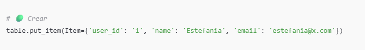
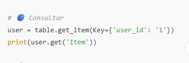
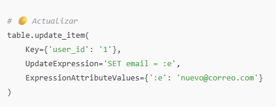
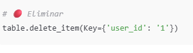

Amazon DynamoDB es un motor de base de datos NoSQL totalmente gestionado por Amazon Web Services (AWS), diseñado para ofrecer un almacenamiento rápido y flexible orientado a clave-valor y documentos. Se caracteriza por su alta escalabilidad, ya que puede procesar desde unas pocas consultas hasta millones de operaciones por segundo con una latencia en milisegundos, lo que lo hace ideal para aplicaciones críticas en tiempo real. Entre sus principales características destacan: la administración automática de la infraestructura sin necesidad de servidores, la replicación de datos en múltiples zonas de disponibilidad para garantizar alta disponibilidad y tolerancia a fallos, la flexibilidad de esquema que permite almacenar ítems con diferentes atributos sin estructuras rígidas, y la posibilidad de crear índices secundarios que optimizan las consultas. Sus funciones principales incluyen almacenar y consultar datos en forma de ítems y tablas, gestionar el acceso concurrente de grandes volúmenes de usuarios, integrarse de manera nativa con otros servicios de AWS como Lambda, API Gateway o S3 para arquitecturas serverless, y brindar seguridad mediante autenticación y control de accesos con IAM. DynamoDB se utiliza ampliamente en casos como aplicaciones móviles y web de gran escala, juegos en línea, sistemas de comercio electrónico e IoT, donde se requiere velocidad, disponibilidad global y escalabilidad prácticamente ilimitada.



